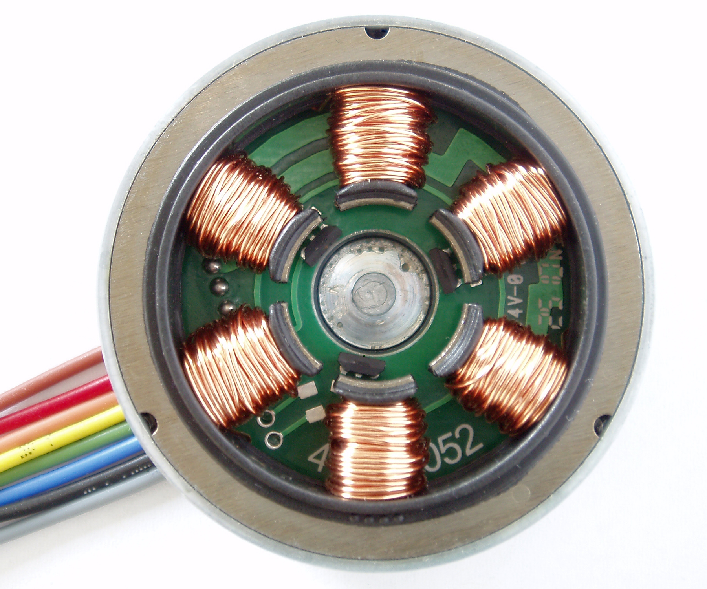
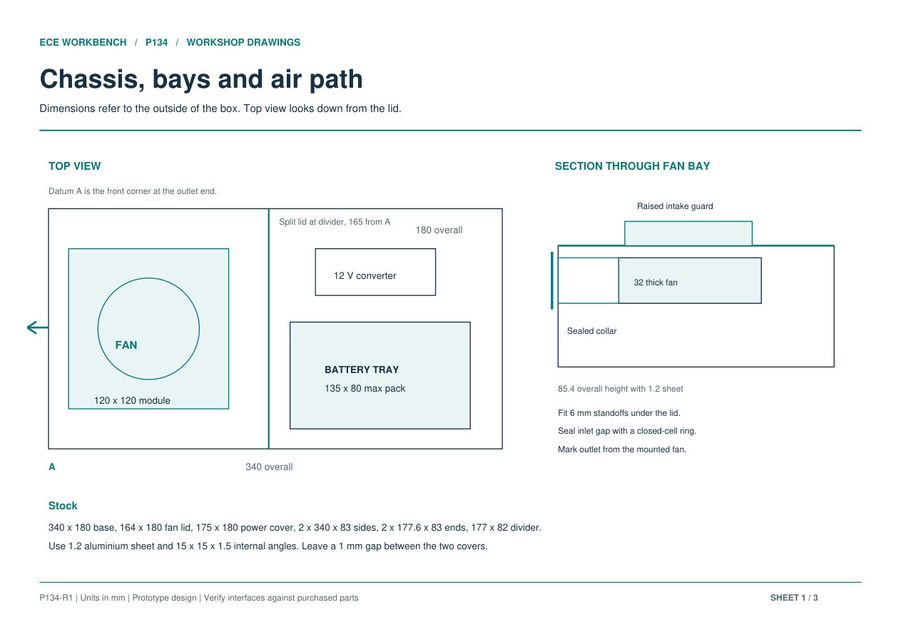
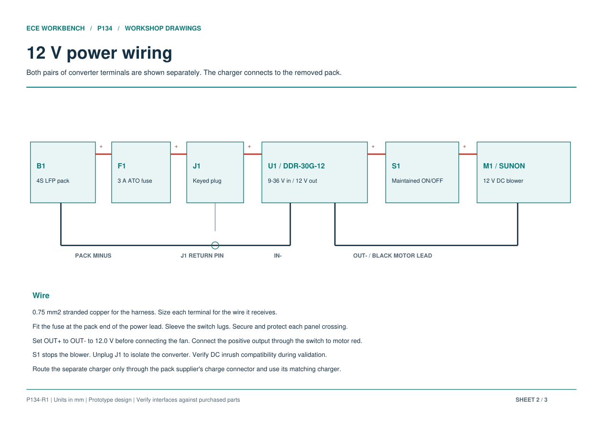
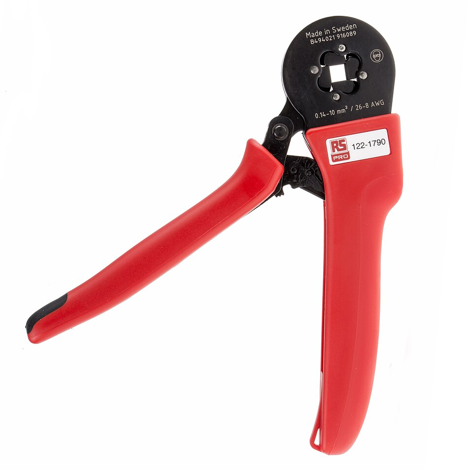
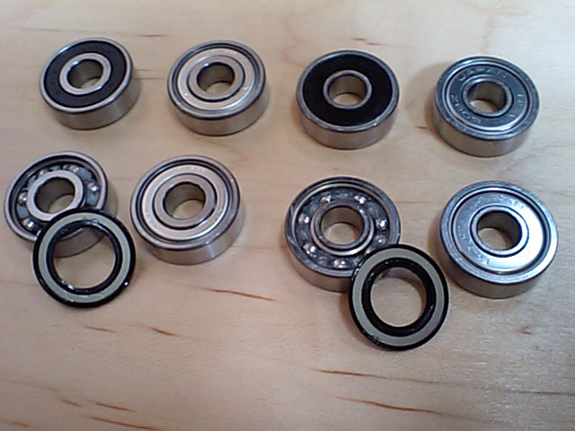

Build a battery-powered workshop blower
Make a portable, guarded centrifugal blower that blows clean air across a bench fixture. Cut and assemble the aluminium enclosure, make the nozzle and battery harness, then measure the finished machine.
Download the fabrication, wiring and 1:1 fitting drawings
What you will build
This unit sits on a bench and runs from a removable 12.8 V pack. A centrifugal wheel takes air in through its centre and sends it sideways through a scroll and nozzle. Use it for clean-air cooling or a test jig. Keep the intake away from grinding dust, metal chips and welding fumes. The first article targets 30 m³/h installed airflow. Sunon rates the bare blower at about 61 m³/h in free air and 222 Pa at zero flow. Measure flow through the finished nozzle and both guards before setting a product rating. The drawings describe a prototype that still needs a physical build and test. Sunon · PMB airflow curve and dimensions.




See how a cordless blower is used. Watch Bosch swap nozzles and batteries on its 18 V GBL 18V-120. Identify where the intake, scroll, discharge and switch sit. The Bosch tool is the handheld performance benchmark. Bosch Professional · Cordless blower video · Bosch India · Ratings and product photos.
Buy the parts in India
Order the blower module, pack and switch first. Measure them before cutting sheet metal. Ask each distributor for the exact suffix, dispatch date and landed quote for your PIN code. For Ludhiana fabrication, take the drawing to a sheet-metal shop and ask for deburred blanks and cutoffs of aluminium angle. These are one-unit quantities. Metline · 5052 aluminium supply in Ludhiana.
| Qty | Part and procurement specification | Source and shop check |
|---|---|---|
| 1 | Sunon PMB1212PLB2-A.(2).GN centrifugal blower View photo | 12 V DC, 820 mA nominal, 9.8 W, 2,500 rpm, 120 × 120 × 32 mm. The PBT scroll, balanced impeller, shaft, brushless controller, wound stator and two ball bearings arrive assembled. Check red positive and black negative against the exact motor drawing. element14 India · Order code 1568499 · DigiKey India · Alternate source · RS India · Blower photo. |
| 1 | Protected 4S LiFePO₄ pack, 12.8 V, 6 Ah View photo | Robu Pro-Range IFR 32650 4S1P. Confirm max charge voltage, allowed charge/discharge currents, BMS limits, dimensions and disconnect method with the pack supplier. The tray accommodates up to 135 × 80 × 70 mm. Ask for a matching, shrouded charge connector and a keyed, protected discharge pigtail. Robu India · Protected pack · RoboticsDNA · DC-jack variant shown. |
| 1 | Matched 4S LiFePO₄ CC/CV charger View photo | Ask the pack seller to supply a compatible unit and confirm charge voltage, current, connector barrel size and polarity. The Robu 14.5 V listing gives conflicting current ratings. Ask the seller for the label and CC/CV specification before ordering. Charge the removed pack at its factory charge interface. Robu India · 14.5 V charger · IBOTS · Charger photo. |
| 1 each | MEAN WELL DDR-30G-12 and 70 mm DIN rail View converter View rail | 9–36 V input, 12 V output with adjustable trim. Output limit is 2.5 A at 12–36 V input and 2.13 A below 12 V input. The Sunon is rated up to 13.8 V and a fully charged pack can reach 14.6 V. Use the regulator between them. Check the G suffix and keep its cooling clearance. element14 India · Order code 3002993 · MEAN WELL · Datasheet · RS · Converter photo · Rail photo · Ulfbastel, public domain. |
| 1 | S1 NKK MN11SS1W01 panel toggle View photo | Maintained SPST ON/OFF, 4 A at 30 V DC for resistive loads. Fit it on the 12 V output side. Transfer the bushing and anti-rotation dimensions from the actual hardware. Check blower startup and switching duty against the switch rating. DigiKey India · MN11SS1W01 · NKK · Ratings and mounting drawings. |
| 1 + 2 | F1 Littelfuse FHAC0001ZXJ holder and 0287003.PXCN fuses View holder View fuse | Covered ATO holder and 3 A, 32 V DC blade fuses. Fit one fuse and retain a spare. Fuse the positive lead at the pack end. Have the harness shop match the splice barrel to the holder wire and smaller harness wire. Verify the fuse curve and inrush on the assembled system. DigiKey India · Holder · DigiKey India · Fuse · RS · Holder photo · RS · Fuse photo. |
| 1 set | J1 AMASS XT90-S connector pair and 0.75 mm² harness View connector View ferrules | Candidate keyed anti-spark disconnect. Ask the pack supplier to fit the recessed female half after F1 and to confirm the connector and pack can handle measured startup inrush. Put J1 under the removable power-bay cover. Buy 1 m each of red and black 0.75 mm² stranded copper, insulated step-down splices, compatible ferrules, heat-shrink sleeves, two cable clamps and a grommet. Size the motor-side terminals for the factory 24 AWG leads. Robokits India · XT90S-M/F-H pair · Ferrule photograph and credit in P104. |
| 1 set | Case, guards, seals and nozzle View sheet View guard stock View screw View drawing | 1.2 mm 5052 aluminium sheet, 300 mm of 15 × 15 × 1.5 mm aluminium angle, 30 M4 × 10 screws with washers and prevailing-torque nuts for the case, four 6 mm standoffs with motor fasteners sized to the measured bosses, four rubber feet, two mechanically anchored battery straps, closed-cell foam and 1 mm perforated 304 stainless steel for the guards. Order stock for the guard flanges and folded outlet collar using the cut list. Kanakratna · Aluminium sheet · Guard stock photo · Tahini, CC BY 2.0 · Screw photo · Cdang, public domain. |


Illustrative one-off sourcing subtotal for the module, regulator, pack and charger was about ₹8,800 in the supplier listings checked. Add switch, guards, material, fabrication, labour, delivery and tax from your quotes. Check connector and charging compatibility before buying the battery parts. element14 · Blower quote · Robu · Pack range.
Tools and cut list
Set out a steel rule, square, vernier caliper, scriber, transfer punch and clamps. Use a sheet-metal shear or local cutting shop for blanks, a drill press or controlled hand drill with a backing board, 3 mm pilot and 4.5 mm clearance bits, and a metal hole saw or hand nibbler for the 76 mm intake. Have a fine flat file, deburring tool, vice with soft jaws, hand seamer, M4 drivers, wire stripper, correctly sized crimpers, soldering iron for the switch lugs, heat gun, multimeter and a current-limited bench DC supply. An anemometer and thermometer are needed for final testing. Clamp the work for drilling and keep swarf and tools clear of the battery bay. OSHA · Drill press workholding.


Tool photo sources. Caliper · Jacek Halicki, CC BY-SA 4.0 · Drill press · Plbcr, CC BY-SA 3.0 · Hole cutter · Malco · Multimeter · Anselm Schüler, CC BY-SA 4.0 · Bench supply · Derrick Parker, CC0 · Anemometer · TSI.


| Piece | Qty | Blank in mm | Workshop operation |
|---|---|---|---|
| Base | 1 | 340 × 180 × 1.2 | Drill for the DIN rail, tray anchor points and feet. |
| Fan lid and power-bay cover | 1 each | 164 × 180 × 1.2 and 175 × 180 × 1.2 | Leave a 1 mm gap between covers over the divider. Put the fan and guard on the shorter lid. Attach the other cover separately so battery access leaves both blade guards in place. |
| Long sides | 2 | 340 × 83 × 1.2 | Clamp square against the base. Drill internal angles and transfer their holes to the sides. |
| End plates | 2 | 177.6 × 83 × 1.2 | Fit between the long sides. Transfer outlet from the mounted module. Put S1 on the power end. |
| Divider and joining angles | 1 + 12 | 177 × 82 × 1.2 divider, 25 mm angle lengths | Start divider 165 mm from the outlet end. Use a protected wire pass-through. Cut angles clear of the air path and support them against vibration. |
| Battery tray and collar | 1 each | 165 × 110 tray blank, 0.8–1.2 mm collar sheet | Set out 15 mm tray flanges for up to a 135 × 80 mm base. Cut the reliefs in the four metal corners and bend the flanges. Mark the collar from the actual outlet and bolt its flange to the end wall. |
| Intake and outlet guards | 2 | 130 × 130 × 1 intake plate. Fit outlet guard to collar. | Use 3 mm holes on a 4.5 mm staggered pitch, with about 40% open area. Preserve 120 × 120 mm perforated area at the intake and raise it 12 mm above the lid on a rigid perimeter frame. Give the outlet guard a widened face with at least as much net open area as the bare scroll outlet. |

Watch the metalwork before cutting. See the pilot hole, cutter setup and sheet support in Malco’s adjustable cutter demonstration. For the 76 mm opening, use a cutter rated for the actual sheet or trace and nibble to the line. Malco · HC1/HC2 sheet-metal hole cutter demonstration · Bosch · Sheet-metal hole saw training.
Make the housing and air path
- Dry-fit at full size. Mark datum A at the outlet/front corner of the lid. Place the module's 120 mm square 15 mm in from the outlet end and 30 mm from the front edge. Face the intake up and the discharge toward the outlet end. Use the 105 × 105 pitch marks to identify the occupied outer mounting bosses. Set the motor and the actual inlet guard down on cardboard and transfer the intake centre. Verify the clearance for wiring and the outlet before punching metal.
- Build the square box. Deburr the blanks. Clamp the sides and ends against the base with the corner angles, check diagonals and drill the first matching holes through the angles. Fit the divider 165 mm from A along the long edge. Transfer four fastening points to each lid from the internal angles. Open the power cover and confirm the fan lid stays fastened. Use two bench clamps or a temporary square assembly jig to hold the next unit to the same dimensions.
- Fit the lid and inlet guard. Drill the transferred mounting holes 4.5 mm for M4. Cut the nominal 76 mm inlet only after checking the 74.5 mm manufacturer inlet and actual centre. Mount the blower below the lid using 6 mm standoffs and a continuous closed-cell ring between the lid and intake lip. Choose screw length by test fitting each boss to maintain impeller clearance. Put a raised, rigid guard over the inlet with tool-removable screws and a sufficiently large perforated area to keep pressure loss down.
- Transfer and make the outlet. With the lid bolted on, use the outline of the fixed scroll mouth to make a cardboard collar that bridges the gap to the outlet end wall. Transfer that outline to the wall. Drill inside the corners, remove the centre with a nibbler, and file to fit. Form a short smooth collar from sheet and bolt its flange to the wall. Seal the join to the blower mouth without drilling into its plastic scroll. Fit a rigid tool-fastened outlet guard and cover the sheet edges.
- Fit the electrical bay. Bolt the DIN rail, straps and battery tray to the base with clearance underneath. Add a smooth nonconductive pad in the tray and secure the pack on two axes. Place U1 where the air around it can circulate. Transfer the switch bushing to the power end. Give J1 enough slack to mate by hand with the bay cover off and use strain relief so pulling the plug puts no load on the converter terminals. Grommet the divider hole that carries the blower leads. Deburr and remove all swarf. With power disconnected, inspect the guards and verify moving parts are inaccessible from both openings.
Wire it and start it on the bench


- Build the harness with the battery out. Route pack positive to F1 at the pack end, then through the keyed disconnect to U1 IN+. Take pack negative through the matching disconnect to U1 IN−. Route U1 OUT+ through S1 to the red blower wire. Route blower black to U1 OUT−. Keep the two sides of the converter separate. Heat-shrink the switch lugs and use the terminal maker's specified strip length and crimp die. Tug-test each crimp.
- Set 12 V at the output. Leave the blower unplugged. Check polarity, continuity and isolation from the metal case. With the power cover off, connect the current-limited DC bench supply at J1 with a fused test lead and set 12.8 V. Verify 12.0 V across U1 OUT+ and OUT− and trim if needed. Turn the bench supply off, connect the blower and secure the fan lid and both guards before the next power-on.
- Prove starting and running. Start from 12.8 V on the bench supply. Read both converter input and blower output. Repeat at the pack's full-charge voltage and its approved low operating limit. Capture startup current with a suitable peak measurement or protected shunt. MEAN WELL lists converter inrush separately from fan current. Check that the battery BMS, connector and fuse tolerate the measured pulse. Investigate repeated trips before connecting the battery.
- Run the finished assembly on the pack. Remove the bench lead and set S1 to OFF before mating J1. Secure the pack and close the service cover. Check that the blower stays off until S1 is operated. Run through a warm-up cycle with the case shut. Disconnect J1 after use and charge the removed pack with its matched charger.


Watch the crimp cycle. See where the insulated connector sits in the die and how the ratchet releases at the end of the stroke. Follow the connector maker’s strip length and pull-check your own spare connection. KNIPEX · PreciForce 97 52 36 crimping pliers · P05 · Wiring and joints.
What sets the motor, windings and bearing strength



- Power and shaft torque. At 12 V × 0.82 A the module takes about 9.8 W electrical. At 2,500 rpm, angular speed is 262 rad/s. Dividing 9.8 W by 262 gives 0.037 N·m as an upper bound on shaft torque at that speed. Actual torque uses measured shaft power after controller and motor losses. For an example design point of 30 m³/h at 130 Pa, air power is 0.00833 m³/s × 130 Pa = 1.08 W. At assumed 35% fan efficiency that would take about 3.1 W at the shaft, or 0.012 N·m at 2,500 rpm. Use the actual fan curve and measured pressure before choosing an alternative motor.
- Coils and rotor. In a brushless motor the enamelled copper windings are on the stationary steel laminations. The rotor carries permanent magnets and the controller commutates the windings. A custom winding drawing needs slot and pole count, core and slot dimensions, turns, conductor cross section, insulation class, winding resistance, speed constant and measured temperature rise. The blower's two-wire 0.82 A supply current is a DC input measurement. Determine phase current separately for a custom winding and verify copper loss against the hot winding resistance. TI Precision Labs · Motor physics video.
- Bearings and shaft. Sunon lists two ball bearings. Ask its engineering team for internal bore, fits, preload and load ratings if you need to specify replacements. Replace the purchased module as a unit if its bearings develop play or noise. For a custom rotor, specify shaft fits and material from bending and torsion, then check radial and axial loads, speed limit, dynamic load rating and temperature. Rotor imbalance force grows with speed squared. An illustrative 0.5 g error at 40 mm radius produces about 1.4 N at 2,500 rpm and about 63 N at 17,000 rpm. Commission dynamic balancing and use a rated containment and test setup for any new impeller. Sunon · Exact module specification and drawings · SKF · Bearing rating life and loads.
See the blower factory operations. Follow the production-floor photographs from winding and assembly to balancing and airflow testing. The video shows automated impeller balancing on a separate manufacturer’s production line. SUNXFAN · Stator winding, assembly and test photographs · TKFAN · Dynamic balancing and impeller moulding demonstrations.
Bosch's 18 V reference tool is rated up to 120 m³/h and 17,000 rpm. Moving to that size of handheld blower requires a matched higher-flow impeller, scroll, motor, controller and handle with a tested high-current pack. Measure the pressure and flow your customer needs before specifying that power train. Bosch India · Handheld reference specifications.
Accept or fix the first unit
| Check | First-article acceptance | If it fails |
|---|---|---|
| Mechanical | Both guards locked by tools, edges smooth, fasteners secure, pack restrained, feet stable. No blade rub or foreign material. | Isolate the battery. Inspect boss screw length, soft-mount compression and guard clearance. |
| Electrical | 11.8–12.2 V measured at M1 in normal operation. Five successful starts and five correct stops with the specified pack. Record input, output and peak current. | Check polarity, converter adjustment, fuse curve, wiring drop and BMS limits. Isolate the cause before repeating. |
| Flow | At least 30 m³/h through the guarded outlet with the documented test duct. Record fan speed or supply voltage and the nozzle you used. | Check inlet position, guard free area, collar leaks and rubbing. Test after reassembly with both guards fitted. |
| Warm-up and run time | Record ambient, pack and converter temperature at 5, 15 and 30 minutes. Stay within their published limits. Stop the supervised runtime trial at the pack supplier's operating cutoff. | Check regulator cooling, battery fit and pack capacity. If the measured voltage reaches the permitted lower limit, stop and recharge. |
Measure flow with a straight duct that collects the entire guarded outlet. For a 100 mm circular duct, aim for 750 mm of straight run before the probe plane and 300 mm after it. Measure multiple points across two diameters using the probe maker’s traverse pattern. Multiply average velocity by the duct area. Around 1.06 m/s mean velocity gives 30 m³/h in this duct. Record the duct and adapter with the result. TSI · Duct traverse procedure · TSI · Set up a duct traverse on a VelociCalc · P136 · Filter experiments.
A 6 Ah pack stores about 76.8 Wh nominally. Assuming 80% usable capacity, 86% conversion efficiency and 9.84 W at the blower gives about 5.4 hours as a calculation. Use the recorded runtime as the result.
Record drawing revision, pack and module lot, material and fastener checks, airflow, temperature, wiring and rework for each serial number. Keep the first passing case as the fit reference and use its hole layout to make a drill fixture. For sale, confirm the finished device, pack and charger classifications and the applicable producer obligations. BIS · Portable lithium battery test report · CPCB · Battery producer registration.
P135 · Continue with the corded mains blower